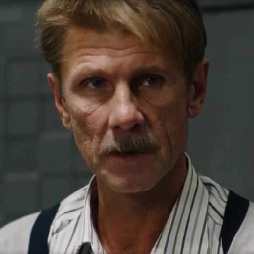

Info
- IMDb RATING
-
⭐ 7.7/10
3.6K - Release dates
- 16 July 2014
- Director
- Oles Sanin
- Cast
- Boklan
 Jeff Burrell
Jeff Burrell- Jamala
- Boris Georgievskiy
- Storyline
- Peter is a 10-year-old boy living in the midst of turbulent early-1930s Soviet Ukraine. His father, an American engineer, is killed for obtaining secret documents about the repressions, which now are hidden in Peter's book. The boy flees from the police with a blind kobzar (Ukrainian folk minstrel), Ivan Kocherga. Ivan does everything to help his young guide grow up and survive with a kind and clear soul that will not be hardened by what his eyes have seen. He tells his young guide elaborate stories that make him believe there can be a different reality from what he sees around him. The viewer is challenged to admit that the blind kobzar might see the world with greater clarity than those with perfect eyes
Storyline